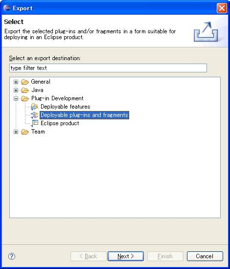
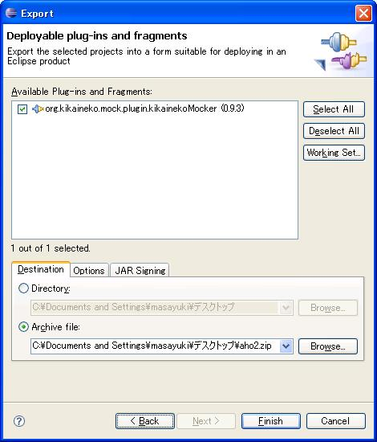
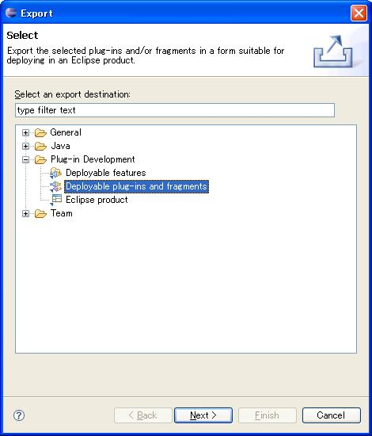
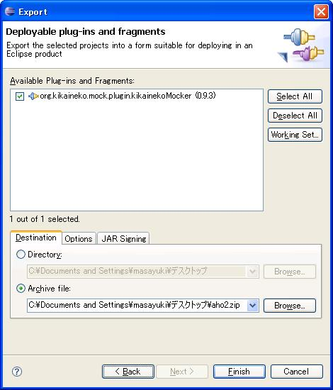

KikainekoMocker
プラグイン開発にかんして
はじめに
現在の機械猫モッカーのEclipseプラグインはとても不安定で、環境ごとに動いたり動かなかったりが激しいようです。
またプラグイン側をちょっといじるとすぐに実行できなくなってしまい。まったくもってワケワカな状態です。
まぁ僕のプラグイン開発スキルがないだけなのですが。。。
ここで僕がどのようにテストしたりしているかを公開しますので、「その方法はまずい」とか「こうしなさい」などありましたら ぜひともご教授ください。
まぁ僕のプラグイン開発スキルがないだけなのですが。。。
ここで僕がどのようにテストしたりしているかを公開しますので、「その方法はまずい」とか「こうしなさい」などありましたら ぜひともご教授ください。
sourceforgeのCVSから取得
とりあえずCVSのヘッドから最新を取得します。その際にソースだけではなく、plugin.xmlなどもずらずらと落すことが肝心です。
また、プラグイン側に機械猫モッカー本体のJARが入っています。（デプロイする際に内包されるJARです）
また、プラグイン側に機械猫モッカー本体のJARが入っています。（デプロイする際に内包されるJARです）
ビルド環境
僕の環境はJDK1.5のコンパイルレベル1.4です。
デプロイ
プラグインのデプロイってかなりEclipseのバージョンに寄ってるんでしょうか。あるいはプラグイン開発用のプラグインの有無の差か？
とかく、環境によってデプロイの方法が違っています。
私のメインの開発機では以下のようにしています。
☆プラグインのプロジェクトを選択→右クリック→エクスポート
ほいで
☆Deployable plug-ins and fragmentsを選択し、Next

すると、こんな画面になって

まぁいろいろあるけども「DestinationのArchive」で保存先を決定し、Finish
私のメインの開発機では以下のようにしています。
☆プラグインのプロジェクトを選択→右クリック→エクスポート
ほいで
☆Deployable plug-ins and fragmentsを選択し、Next

すると、こんな画面になって

まぁいろいろあるけども「DestinationのArchive」で保存先を決定し、Finish
で、実行
で、実行するとエラーになります。
いま、分かっているのは
、UnsupportedClassVersionErrorが発生して、落ちる。見た目は何も実行されていないように見える。Eclipseのプロジェクトのログに出ている
生成がキャンセルされました、みたいなメッセージがでる。これは、通常ユーザがキャンセルボタンを押したさいに発生するものだが、、、
そもそも機械猫モッカーのラベルが出てこない。→なぜかプラグインとして認識されていない
の3つが入れ替わり立ち代り現れます。
どうしたものか。
あ、一点、プラグイン側にデプリケイトなメソッドがあります。
いま、分かっているのは
、
どうしたものか。
あ、一点、プラグイン側にデプリケイトなメソッドがあります。